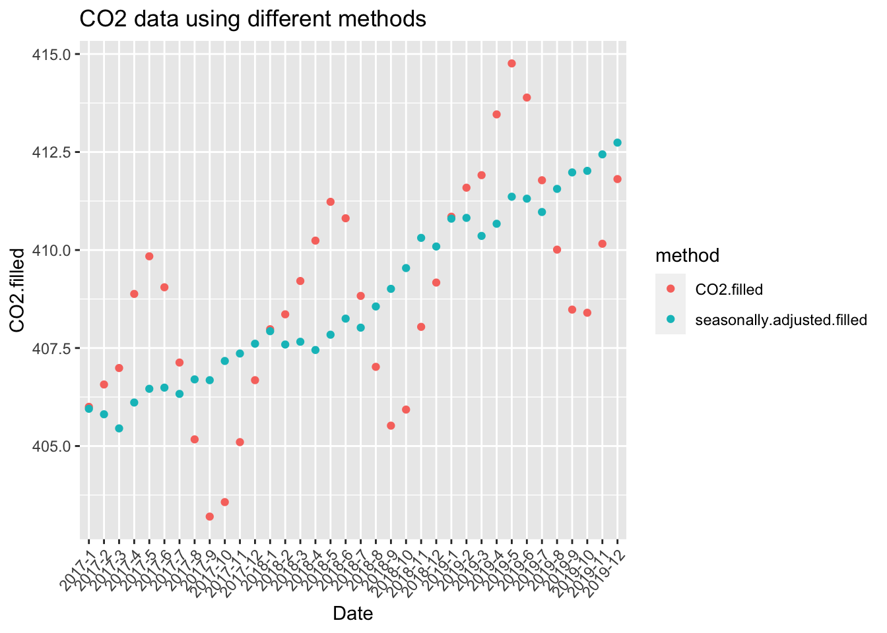
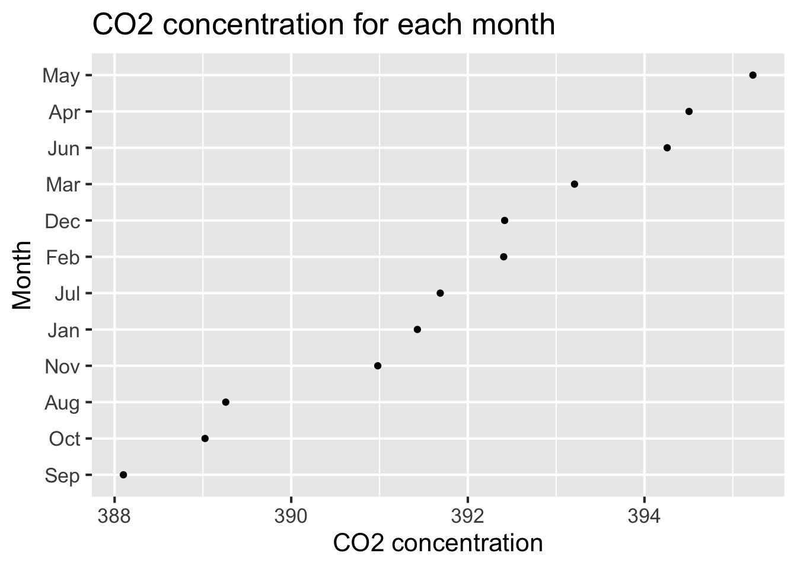
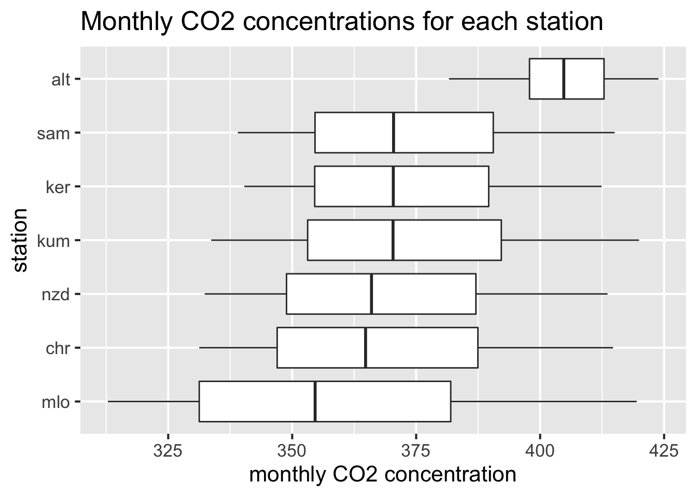
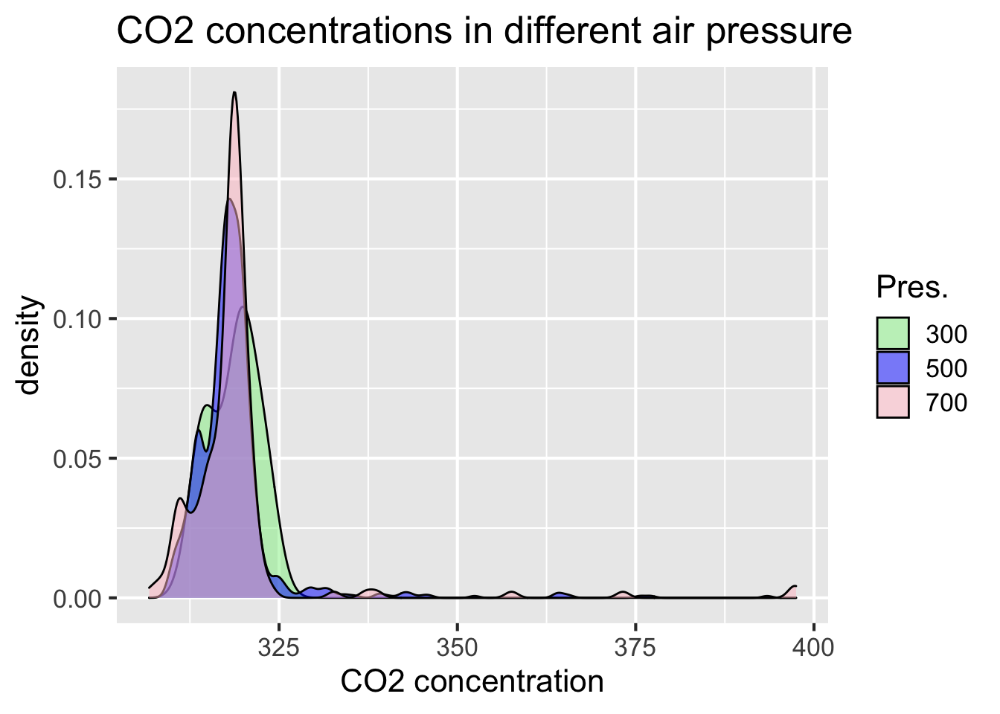
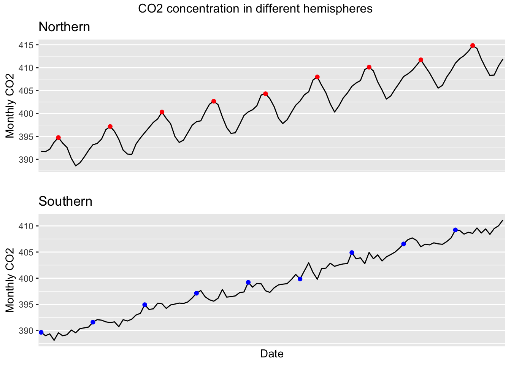
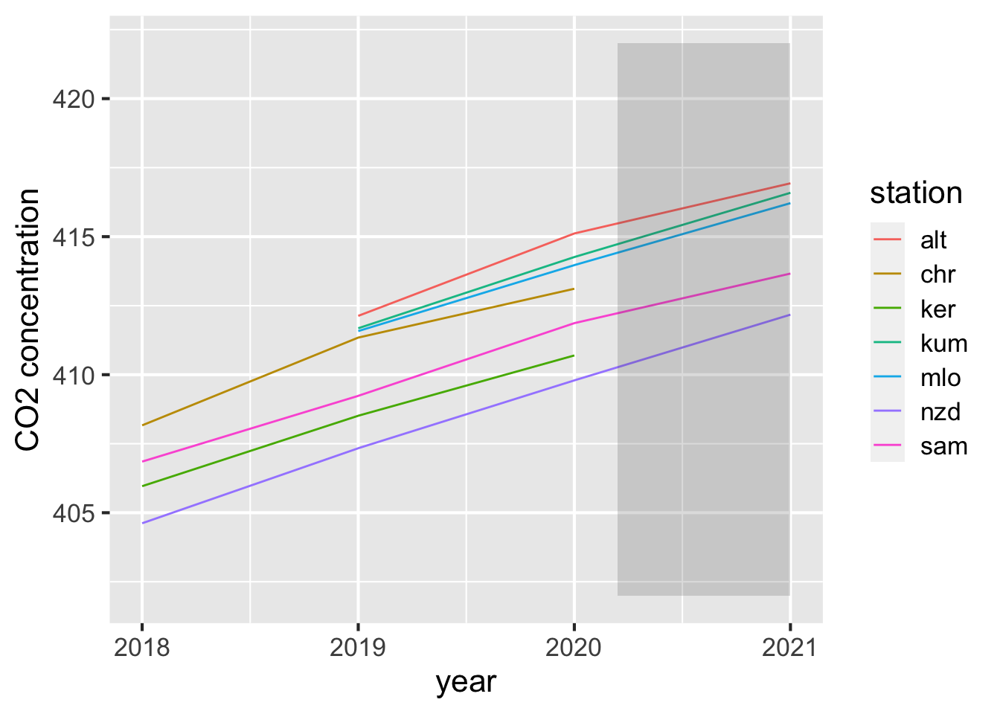

Chapter 5 Results
5.1 CO2 changes by time
5.1.1 General trend
The CO2 concentration in this graph is the average CO2 concentration of all the months of the whole year. From this graph, we can conclude that on the whole there are increasing amount of C02 concentrations for all the stations year by year over time. And this trend is consistent for all sampling stations.
5.1.2 Adjusted data

We select the year 2017 to 2019 as an example. The original data has two columns: “CO2.filled..ppm” and “seasonally.adjusted.filled..ppm” representing the original CO2 concentration collected and the CO2 concentration after removing the quasi-regular seasonal cycle adjusted, respectively. As shown in the red points, we can see that there is a clear pattern of the CO2 concentration following the pattern of months (seasons). However, in the blue points, we can see that the trend is consistent, and there is no such pattern for points to drift up and down, which is appropriate since the adjusted method is to remove the seasonal cycle. Therefore though these two columns all indicate the CO2 concentration information, they might have different results using different methods.
5.2 Factors affecting the CO2 changes
5.2.1 Time: months

We use stations Mauna Loa Observatory and Cape Kumukahi Station, which are both in the northern hemisphere, from 2001 to 2020 to generate this graph. The CO2 concentration in this graph is the sum of the CO2 concentration of these two stations for each month. We can inspect that the CO2 concentration in each month shows great differences. In summer, the CO2 concentration gets to a high level, while it is relatively low in spring and autumn. Regardless of year, March is the month where the CO2 concentration reaches an exact low level contrasted to other months. We can conclude that there are some factors related to time causing such a situation. Primarily, temperature and human activities are all vital influencing factors.
5.2.2 Location: sampling stations

The monthly CO2 concentration in this graph is basically the CO2 concentration of all the months. From this graph, we can conclude that the median monthly CO2 concentration values are similar across all the stations except for the Alert Station. The Alert Station has a median of more than 400, while the median of others is approximately between 350 and 375. That’s because the Alert Station started to record data only from 2011, so it has a small range. The highest monthly CO2 concentration also comes from the Alert Station, which is almost 425. Besides the Alert Station, Cape Kumukahi Station and American Samoa Station have higher monthly CO2 concentrations than Kermadec Island Station than the other three stations. The data for Mauna Loa Observatory is the most sparse because it is the earliest station to record data, and that’s why its median is the lowest. There are no outliers.
5.2.3 Location: air pressure

Although we collect our data from three air pressures, no matter what air pressure is, CO2 concentrations are concentrated between 300 to 325. From this graph, we can also see that there are few outliers, which will be flagged as contaminated and moved from the final result.
5.2.4 Location: hemispheres

We select the year 2011 to 2019 as an example for both graphs. So the monthly CO2 concentration in this graph is basically the CO2 concentration of all the months from 2011 to 2019. We find that the northern hemisphere and the southern hemisphere have different trends for the monthly CO2 concentration. In the northern hemisphere, the red point represents the CO2 concentration for May, which is the peak of each year. Meanwhile, in the southern hemisphere, the blue point represents the CO2 concentration for January, which is almost the peak for most years. Due to different geographical locations, seasons and weather may differ, which results in different CO2 concentrations.
5.2.5 Sea water features
The sea water is continuously changing as well. In the data, one feature of sea water is the salinity.
From the above graphs, we can see that there is somehow some relation between Salinity and carbon in sea water. Sea water with higher salinity tends to have a larger amount of dissolved inorganic carbon (DIC). This is a potential factor in the CO2 concentration differences.
5.3 CO2 changes during Covid-19 pandemic

The shaded area is the time period during the Covid-19 pandemic. We select the time interval starting from 2020 March to the present. And we want to focus on this interval to see if the pandemic affects CO2 emission.
5.3.1 Increment ratio comparison
From the above graphs, it seems like the ranges of CO2 concentration increment ratio each month for covid and non-covid time periods are both between 0.98 and 1.02, and they are both bell-shaped. Besides, we can see the differences between the blue and lightblue columns that the count of the increment ratio during covid pandemic is slightly smaller than that in normal time periods. But the differences are subtle as the x-scale we have is all spreading between small units 0.98 to 1.02, so we can say that during the past one and a half years, the increment of CO2 concentration was not largely affected by Covid-19. The trends are approximately the same. We can roughly infer that the Covid-19 pandemic does not have a significant impact on CO2 concentration.
5.3.2 Trend during pandemic
We select data from 2018 March to 2019 November and compared it with the Covid-19 pandemic (2020 March to 2021 November). We can see that the pattern for these two periods is generally the same. This is reasonable because the pattern is mainly affected by the seasonal cycle which is irrelevant to Covid-19. However, when we try to model the regression line for both data, we can see that the line are almost the same during this time interval (20 months), which is consistent with the observations above that there are no significant effects of Covid-19 on the CO2 concentration. But as displayed in the graph, the slopes vary. And the slope of the regression model during Covid is about half of that during normal times. Hence, in long run, we would assume that though the difference is not so visible during 20 months, it might have a more significant influence on CO2 emissions. And it is possible that CO2 concentration will be somehow decreased more if the condition is going to last for a long time.